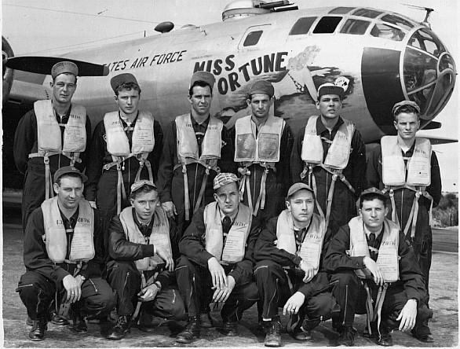

Archived from Wayback capture 20080905085643 for http://mywebpages.comcast.net/b29sinthekoreanwar/b29cr001.html. Retrieved 2026-02-24.
Updated 24 October 2002
Click Here to Return to the
Main Index

My crew the morning we took off for the states after completing
our Korean War tour.
Front Row, left to right
Aircraft Commander: Lt. Don B. Thompson, Kansas City,
Missouri; Pilot: Me; Navigator: Lt. Wesley W. Rogers,
Waco Texas; Bombardier: Lt. Charles J. Darkins, Joliet,
Illinois; Radar: Lt. Hershel L. Davenport, Las Cruces, N. M.
Rear Row, left to right
Flight Engineer: T/Sgt. James A. Sexton, Elkhart, Indiana;
Radio: S/Sgt. Donald A. Brooks, Monterville, W. Va.;
Central Fire Controller: T/Sgt. Arch Deulley, Middlebourne,
W. Va.; Gunner: Cpl. John McLeod, Pontiac, Mich.;
Gunner: Cpl. Bobby Harris, Alabama City, Alabama; Tail
Gunner: Cpl. Edward F. Ryan, Cannon Falls, Minn.
If
you have any updated information on above listed crew members,
please
e-mail me using procedure on Index Page.
Use
your browser's BACK button to return to the previous page